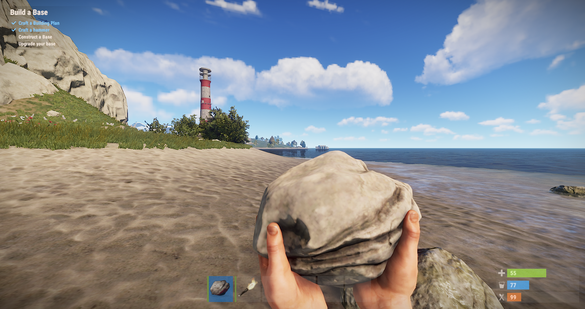
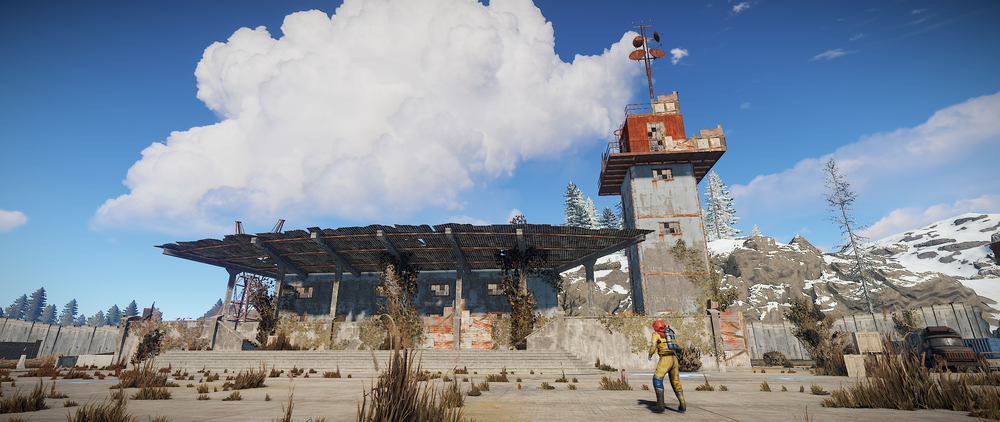
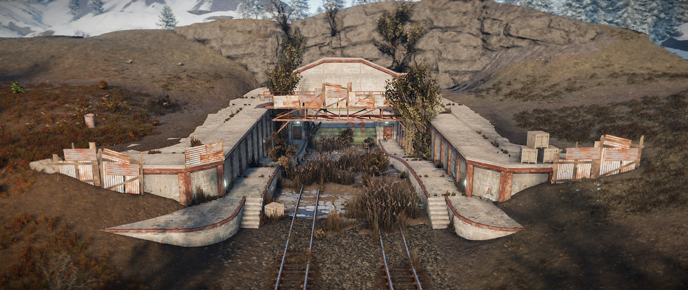
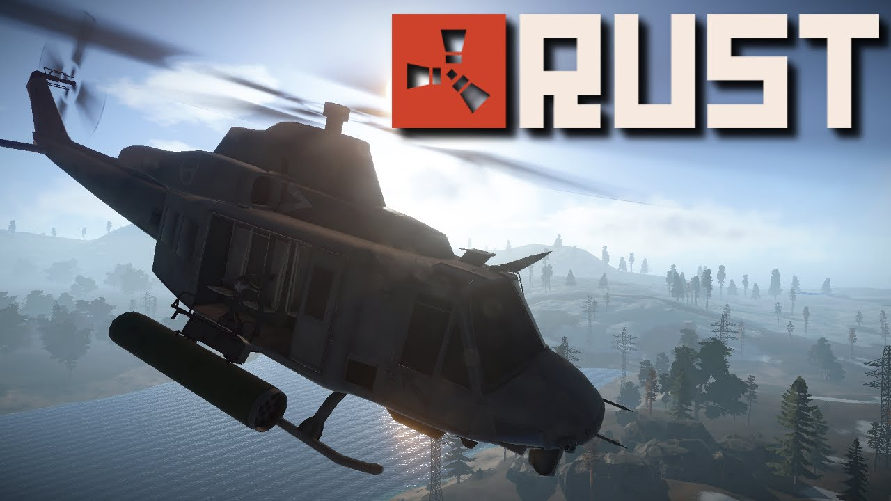

RUST
Facepunch

A Facepunch Studios (Garry’s mod fejlesztő csapata) által, 2013-ban kiadott RUST nevű sandbox túlélő játék, a túlélésről, gyűjtögetésről, vadászatról, saját menedékünk megépítéséről szól. Multiplayer game, ami azt jelenti, hogy egy hatalmas területen vagytok 50-100-an, kitéve a vadállatoknak és egymásnak.
Ha nem a farkas vagy medve öl meg, még mindig fenn áll annak a veszélye hogy összefutsz egy másik játékossal, aki lelkiismeret nélkül eltesz láb alól. Ha van egy kis szerencséd, megúszod ép bőrrel, viszont ha nem találsz elengedő élelmet vagy vizet rövid időn belül, szintén meghalsz. Ha nem öltözöl fel rendesen, megfagysz. Elég jó vagy ahhoz hogy túléld mindezeket?
Amikor nekikezdesz a kalandnak

A játék nem ad tanácsot, nincsen története, mondhatni egy tipikus sandbox survival game.
Kezdésnél felébredsz egy darab kővel a kezedben a semmi közepén, egy olyan világban, amiről nem tudsz semmit. Ahhoz hogy eszközöket készíts, nyersanyagra van szükséged. Fát kell vágni, követ kell bányászni, az állatokat le kell vadászni, a belőlük kinyerhető nyersanyagok miatt. Ha készítettél alaprajzot, elkezdheted bázisod építését, amihez szintén hatalmas mennyiségű nyersanyag kell. Különböző fejlesztési lehetőségek vannak, mindegyikhez más alkotóelemre van szükséged.
Komponensek

2017 első felében kiadtak egy új javítást, aminek köszönhetően a pályán mindenhol kis hordókban vagy dobozokban komponensekhez juthatsz, amire szintén szükséged van az eszközök elkészítésénél. A játékban több mint 300 elkészíthető tárgy van, legyen az ruha, kaja, fegyver, eszközök – minden ami kelleni fog a túléléshez.
PvE elemek
|  |  |
|---|---|
|  |
Hatalmas területet járhatsz be, különböző raktárhelyiségeket és egyéb épületeket találhatsz, mint például: vízerőmű vagy egy elhagyatott atomreaktor. Szarvast, csirkét, vaddisznót, farkast és medvét vadászhatsz le. Folyamatosan bővülő PvE elemek is lesznek a játékban. Jelenleg az egyetlen a helikopter. A szerver generálja, ha sikeresen lelövöd, nyersanyagokhoz jutsz. Van légi támogatás naponta talán 3-4-szer, amit nem csak Te szeretnél megszerezni! Különböző elhagyatott bányák is vannak, amik a játék legmélyebb pontjaira juttatnak el.
Multiplayer, grafika
A többi játékossal tudsz kommunikálni írott és hang formában is. Ha van egy kis szerencséd, szövetséget köthetsz másokkal és együtt véditek a bázisotokat vagy éppen rohanjátok le más házát. A grafika folyamatosan változik, személyre szabható, élethű és szép színekkel dolgoznak. Persze mivel a játék jelenleg alpha verzióban van, ez a része még egy kis optimalizálásra szorul, mert egy komolyabb vasat is megfektet, ha minden beállítás maxon van.
Wipe, játékélmény
A játék borzasztóan időigényes! Gyűjtögetned és túlélned kell. Mire megépítesz egy komolyabb házat, amit nehéz betámadni, simán eltelik az egy hónap, jön a wipe és kezdheted újra az egészet. A wipe annyit jelent, hogy a játék még korai hozzáférésű, ezért a fejlesztők minden hónap elején letakarítják az összes szervert és mehet a móka elölről. Ebben a játékban nagyon kitartónak és higgadtnak kell lenned, mert sokszor meghalhatsz egymás után és sajnos a játékos közösség is elég agresszív. Kevesen segítenek, ha meglátnak, megölnek és elszedik, amit gyűjtögettél, aztán pedig újrakezdheted az egészet. Mit gondolsz, van benned elég spiritusz hogy a legjobbak egyike legyél?